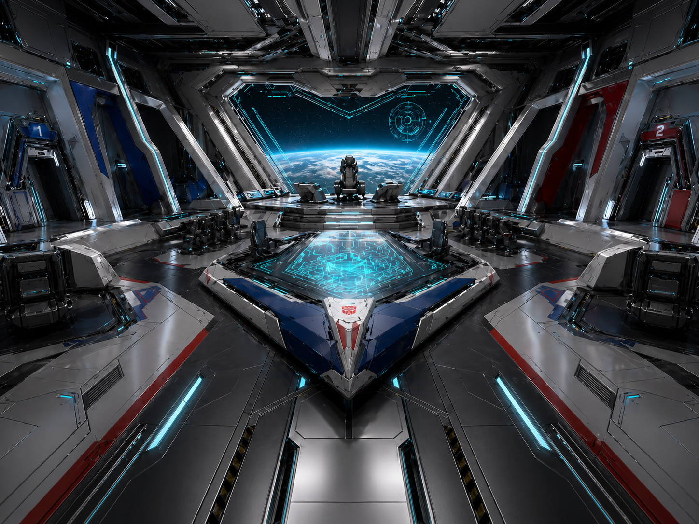

Transformers: Prime fan lore interface
Aegis Vanguard / Эгида Авангарда
Потерянный корабль-носитель автоботов пережил войну в тишине дальнего сектора и теперь должен решить, стоит ли возвращаться к тем, кто почти забыл о нём.
Story Console
Главы и сцены
Кинематографичная история разворачивается по главам. Каждая сцена содержит повествование, реплики, субтитры и локальное управление озвучкой.

Выберите реплику ниже или включите тест голоса, чтобы услышать персонажей.
Источник: standbyРеплики сцены
Активная реплика: нет
Ship Layout
Разделы корабля
«Эгида Авангарда» ощущается не как трофей и не как город, а как строгая автономная военная система, где каждый сектор удерживает часть общей памяти и выживания.
Crew Manifest
Экипаж
Основной костяк корабля держится на девяти офицерах и специалистах. Каждый из них отвечает не только за свой сектор, но и за то, чтобы приказ не распался под весом лет.
Voice Profiles
Голоса персонажей
Архетипы собраны так, чтобы передавать характеры экипажа, не копируя официальные исполнение и интонации франшизы. Если локального аудиофайла нет, сайт говорит через браузерный синтез речи.
Ручной тест
Browser / local TTSДля генерации mp3 заранее используйте локальный Node.js-скрипт. API-ключи никогда не отправляются из браузера.
Mission Log
Журнал миссии
Краткий маршрут корабля от секретного приказа до первого ответа на Землю. Каждый журнал можно использовать как быстрый вход в нужную главу истории.